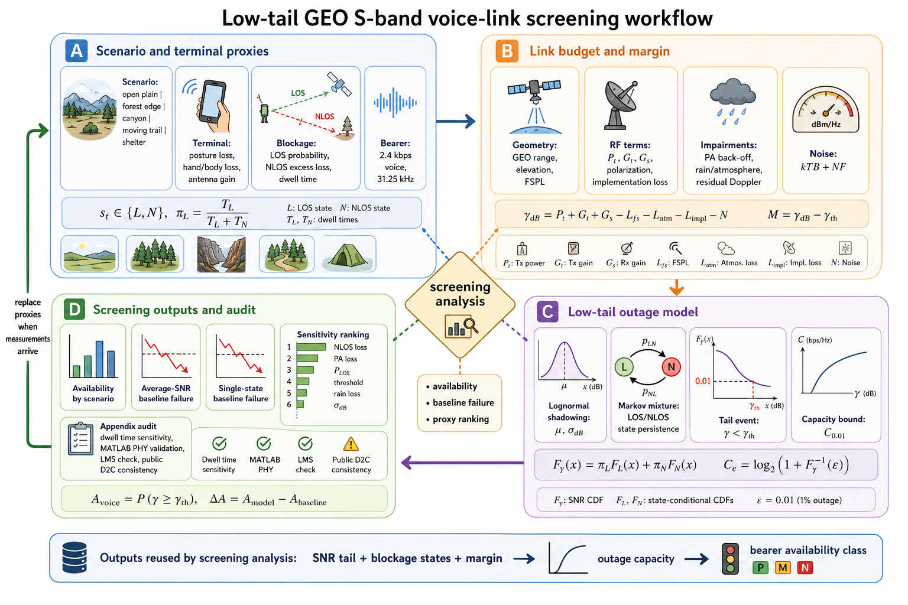
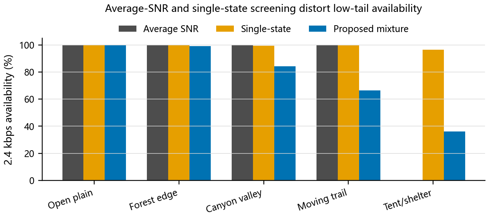
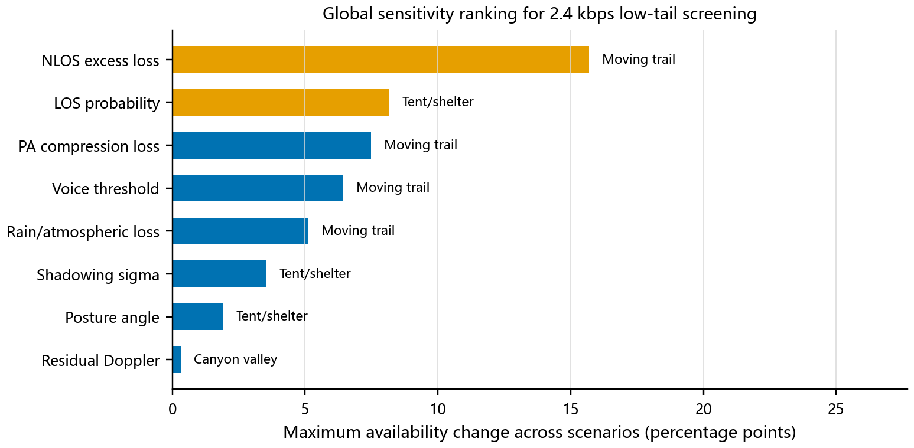
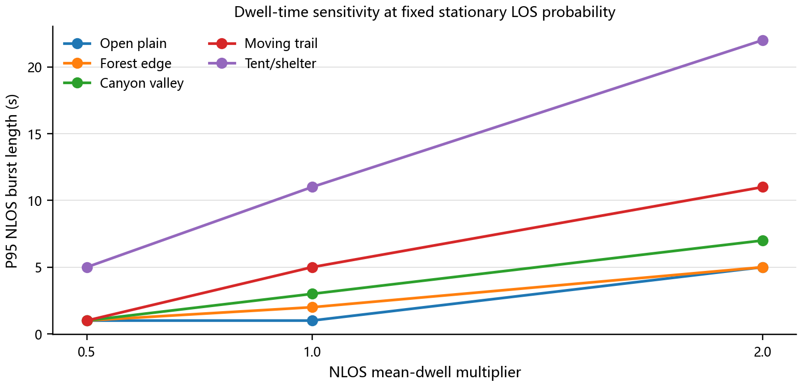
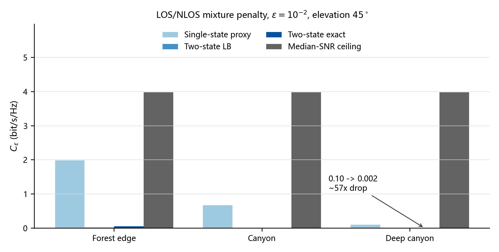

Open plain
100.00%2.4 kbps voice availability
A vendor-neutral research toolkit for estimating whether a handheld satellite-phone style terminal can close a low-rate voice bearer under posture loss, shadowing, LOS/NLOS blockage, and low-tail outage-capacity constraints.
2.4 kbps voice availability
Mixture model availability
Partial availability, not a hard rejection
Largest tested sensitivity driver
Average-SNR screening collapses probabilistic feasibility into hard decisions. It over-accepts canyon and moving-trail cases, then hard-rejects tent/shelter even though the LOS/NLOS mixture still exposes partial availability. A single-state lognormal model remains too optimistic for persistent NLOS states.
| Scenario | Mixture availability | Average-SNR screen | Single-state lognormal | P10 Eb/N0 |
|---|---|---|---|---|
| Open plain | 100.00% | 100.00% | 100.00% | 19.48 dB |
| Forest edge | 99.29% | 100.00% | 100.00% | 14.67 dB |
| Canyon valley | 84.31% | 100.00% | 99.34% | 1.65 dB |
| Moving trail | 66.37% | 100.00% | 99.73% | -2.95 dB |
| Tent/shelter | 36.07% | 0.00% | 96.53% | -14.48 dB |





Run the lightweight command-line screen:
pip install -r requirements-lite.txt
python quick_run.py
python quick_run.py --scenario canyon --added-loss-db 2Run the interactive dashboard locally:
pip install -r requirements-dashboard.txt
streamlit run app.pyRun the Python-only command-line workflow:
python run_all.py --skip-reference-cosimRun the full reference workflow when MATLAB, Simulink, and Communications Toolbox are available:
python run_all.py